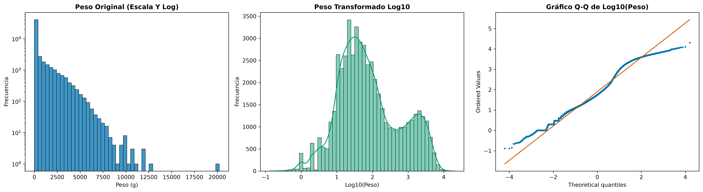
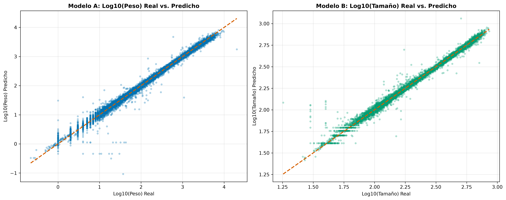

Página Web
Escanea para ver esta presentación
Pruebas Finales
Pruebas de Normalidad, T de Student (Welch), ANOVA de un Factor y Modelos Predictivos Alométricos (LTRM)
Objetivo del Análisis
Evaluar si existen diferencias estadísticamente significativas en el peso (weight) entre las distintas especies de peces (fishcode) registradas en el programa LTRM (UMESC, archivo limpio df_limpio.csv) mediante pruebas T de Student y ANOVA de un factor, previa validación de tamaño de muestra y normalidad. Finalmente, construir modelos predictivos de regresión lineal múltiple con One-Hot Encoding que permitan estimar el peso y el tamaño (length) a partir de la especie y su relación morfométrica.
1 Verificación y Cálculo de Tamaño de Muestra
Fórmula de Suficiencia
Calculado con 95% de confianza (\(Z_{0.025} = 1.96\)) y un margen de error \(E = 0.05 \cdot s\) sobre \(\log_{10}(\text{weight})\), verificando además \(n_i \ge 30\) en cada especie para respaldar el Teorema del Límite Central.
Resumen Descriptivo de las 5 Especies más Abundantes
| Especie | n | Media Peso (g) | Desv. Est. Peso (g) | Media Tamaño (mm) | Cumple \(n \ge 30\) |
|---|---|---|---|---|---|
| BLGL | 18,848 | 50.79 | 54.14 | 118.48 | Cumple |
| LMBS | 9,564 | 195.28 | 345.19 | 178.76 | Cumple |
| CNCF | 8,760 | 536.87 | 800.82 | 324.54 | Cumple |
| GZSD | 8,036 | 75.59 | 117.32 | 169.40 | Cumple |
| CARP | 7,624 | 2,369.27 | 1,609.40 | 522.36 | Cumple |
2 Pruebas de Normalidad (Escala Original vs. Transformación \(\log_{10}\))
Prueba de Validación: Omnibus \(K^2\) de D'Agostino-Pearson
¿Por qué se usa? Debido al gran tamaño de muestra por especie (\(n \approx 7,600 - 18,800\)), Shapiro-Wilk pierde precisión por encima de 5,000 datos; D'Agostino-Pearson está diseñada para muestras grandes.
¿Para qué sirve? Evalúa conjuntamente asimetría (\(g_1\)) y curtosis (\(g_2\)) frente a una normal teórica (\(H_0\): distribución normal vs. \(H_1\): no normal), evidenciando la fuerte reducción del sesgo al aplicar \(\log_{10}(\text{weight})\).
| Especie | n | \(K^2\) Original | \(p\)-value Original | \(K^2\) Log10 | \(p\)-value Log10 |
|---|---|---|---|---|---|
| BLGL | 18,848 | 7,352.15 | 0.0000e+00 | 1,206.12 | 1.2401e-262 |
| LMBS | 9,564 | 4,769.62 | 0.0000e+00 | 1,104.94 | 1.1639e-240 |
| CNCF | 8,760 | 5,122.33 | 0.0000e+00 | 154.08 | 3.4744e-34 |
| GZSD | 8,036 | 5,525.70 | 0.0000e+00 | 133.15 | 1.2216e-29 |
| CARP | 7,624 | 1,850.44 | 0.0000e+00 | 2,941.56 | 0.0000e+00 |
Comparativa Visual: Peso Original vs. Log10(Peso) y Gráfico Q-Q

3 Prueba T de Student (Comparación entre las 2 Especies más Abundantes: BLGL vs. LMBS)
Validación Previa de Varianzas: Prueba de Levene
¿Por qué se usa? Antes de calcular el estadístico \(t\), es obligatorio verificar si las varianzas de ambos grupos son iguales (homocedasticidad) o distintas. Levene es robusta frente a ligeras desviaciones de la normalidad.
¿Para qué sirve? Define qué variante de la prueba T aplicar. Con un estadístico \(W = 695.3315\) (\(p = 2.0619 \times 10^{-151} < 0.05\)), se descarta la igualdad de varianzas y se aplica automáticamente la T de Welch.
Hipótesis y Fórmula
BLGL (\(n=18,848\)): Log10 = 1.4304 (50.79 g)
LMBS (\(n=9,564\)): Log10 = 1.7188 (195.28 g)
Gráficas: Comparación de Log10(Peso) y Distribución T de Student

Interpretación de la Prueba
El estadístico \(t = -34.9804\) se ubica ampliamente dentro de la región de rechazo (fuera de \([-1.9600, +1.9600]\), \(p = 2.1642 \times 10^{-258}\)). Existe evidencia estadística suficiente para rechazar \(H_0\) y afirmar que el peso medio de BLGL (50.79 g) y LMBS (195.28 g) difiere significativamente.4 Análisis de Varianza (ANOVA de un Factor) — Top 5 Especies
Hipótesis y Fórmula
Compara simultáneamente las 5 especies más abundantes sin inflar el Error Tipo I.
Prueba Post-Hoc de Respaldo: Tukey HSD
¿Por qué se usa? Al rechazar \(H_0\) en el ANOVA, solo sabemos que al menos una especie es distinta, pero no cuáles pares difieren. Hacer múltiples pruebas T individuales inflaría el Error Tipo I.
¿Para qué sirve? Contrasta todos los pares de medias controlando la tasa de error familiar. La matriz arroja \(p = 5.1339 \times 10^{-11}\) para todos los pares distintos, confirmando que las 5 especies difieren significativamente todas contra todas.
Gráficas: Distribución de Log10(Peso) por Especie y Mapa de Calor Tukey HSD

5 Modelos Predictivos de Peso y Tamaño según la Especie
A partir de la relación alométrica potencial \(W = a \cdot L^b\), se aplica \(\log_{10}\) en ambos lados para linealizar el problema y entrenar dos modelos de Regresión Lineal Múltiple incorporando la especie (fishcode) mediante One-Hot Encoding (división 80% entrenamiento / 20% prueba):
Modelo A: Predicción de Peso
\(\log_{10}(\text{weight}) \sim \log_{10}(\text{length}) + \text{fishcode}\)
Modelo B: Predicción de Tamaño
\(\log_{10}(\text{length}) \sim \log_{10}(\text{weight}) + \text{fishcode}\)
Coeficiente \(R^2\)
¿Por qué y para qué se usa? Evalúa qué proporción de la varianza real explica el modelo; valores cercanos a 1 confirman un ajuste altamente preciso.
Error Absoluto Medio (MAE)
¿Por qué y para qué se usa? Mide la desviación promedio en unidades físicas reales (g o mm), interpretando directamente la precisión típica de cada predicción.
Raíz del Error Cuadrático (RMSE)
¿Por qué y para qué se usa? Penaliza los errores grandes al elevarlos al cuadrado, permitiendo detectar sensibilidad ante peces de gran peso.
Gráficas: Valores Reales vs. Predichos (Modelo A y Modelo B)

Ejemplos de Predicción por Especie (200 mm \(\rightarrow\) Peso | 150 g \(\rightarrow\) Tamaño)
| Especie | Peso Estimado para 200 mm | Tamaño Estimado para 150 g |
|---|---|---|
| BLGL | 169.41 g | 188.79 mm |
| LMBS | 114.03 g | 216.15 mm |
| CNCF | 61.71 g | 267.50 mm |
6 Conclusiones
1. Validez Muestral y Normalidad
El tamaño de muestra del dataset LTRM supera ampliamente los requerimientos mínimos para inferencia estadística (\(n_i \ge 30\) en todas las especies evaluadas). La transformación \(\log_{10}\) estabiliza la varianza y acerca los datos a la simetría necesaria para el análisis paramétrico.2. Pruebas de Hipótesis (T y ANOVA)
Tanto la comparación pareada mediante T de Welch (tras la validación de Levene) como el ANOVA de un factor confirman diferencias estadísticamente significativas (\(p < 0.05\)) en el peso medio según la especie, detalladas par por par en la matriz Post-Hoc de Tukey HSD.3. Capacidad Predictiva
La inclusión de la especie (fishcode) mediante One-Hot Encoding junto con la relación alométrica logarítmica permite predecir con alto ajuste (\(R^2 > 0.94\) en peso y \(R^2 > 0.99\) en tamaño) tanto el peso esperado a partir de la longitud como el tamaño a partir del peso.